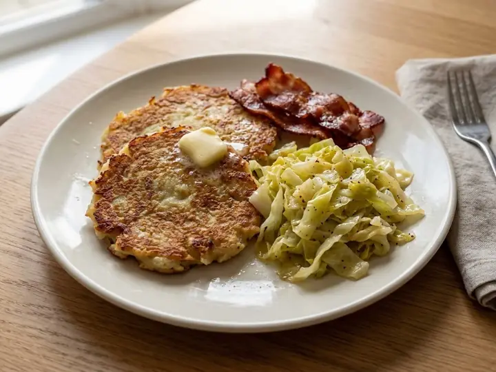

Ireland · Pork · No. 253
Irish Boxty Potato Pancakes with Bacon and Cabbage
A single portion of Irish cooking, ready in 24 minutes with 9 minutes of prep. Written for one, so there is nothing to halve and nothing to waste.
Method
- 1
Grate half the potatoes and boil and mash the other half, then squeeze excess liquid from the grated potato.
- 2
Mix the grated and mashed potato with the egg, flour and milk to form a thick batter, and season well.
- 3
Heat the butter in a frying pan, fry the bacon for 3–4 minutes until crisp, then add the cabbage and cook for 3–4 minutes until wilted. Remove and set aside.
- 4
Wipe the pan, add a little more butter, and spoon in the potato batter to form 2–3 pancakes. Fry for 3–4 minutes per side until golden and cooked through.
- 5
Serve the boxty pancakes topped with the bacon and cabbage.
Find more like this